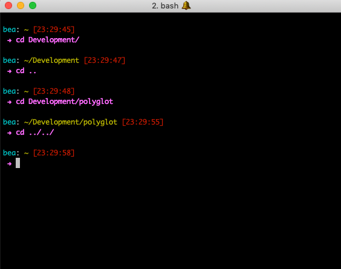
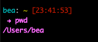

lab 4 Learn some basic command line commands
Goals
- Learn what cd, ls, sublime, pwd, mkdir, mv, rm commands do
- Learn what ~ means
mkdir
mkdir stands for “make directory”
Execute:
mkdir Development
sublime
sublime <filename> means open sublime text and make a file called
Execute:
sublime hello_world.py
Now SAVE the file.
Execute:
ls
You should now see the file within your home directory! Video is down below (my shortcut to open sublime text is subl instead of sublime)
cd
cd stands for “change directory”
Change directories relative to your current directory
.means “current directory”..means “the directory above the current one”
Execute:
cd . #means "stay in the current directory" cd .. #means "change to the directory above us" cd ~ #means "change to the home directory" cd Development #means "change to a directory called Development"
- Note that you can use tab to autocomplete directory names / paths.
- Note that you can mix and match. To go two parent directories up, do
cd ../../<dirname>and etc.

Change directories based on an absolute path
pwd
pwd is used to get the absolute path of a current directory
So far, we’ve only gotten paths “relative” to the current directory. A “relative” path is like giving directions. Go back, go forward. An “absolute” path is like giving the address.
Execute:
pwd

- Note:
cd ~is equivalent tocd /Users/<home_directory_name>
mv
mv is used to move files or directories to different paths
Execute:
mv /Users/<home_directory_name>/hello_world.py /Users/<home_directory_name>/Development
cd ~/Development
ls
You should see the directory “hello_world.py” within Development now.
rm
Todo yourself. Figure out what rm does, and use it on hello_world.py!